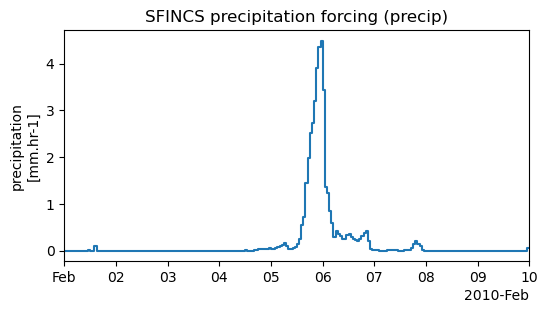
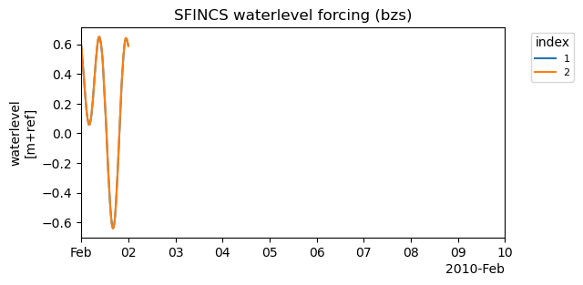
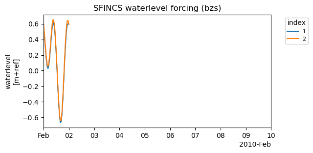
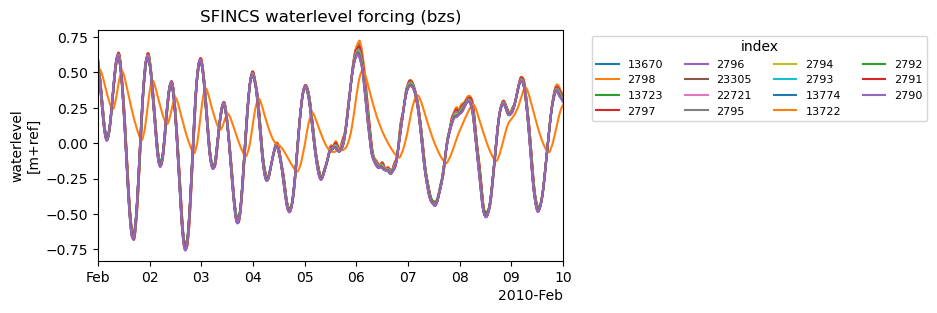
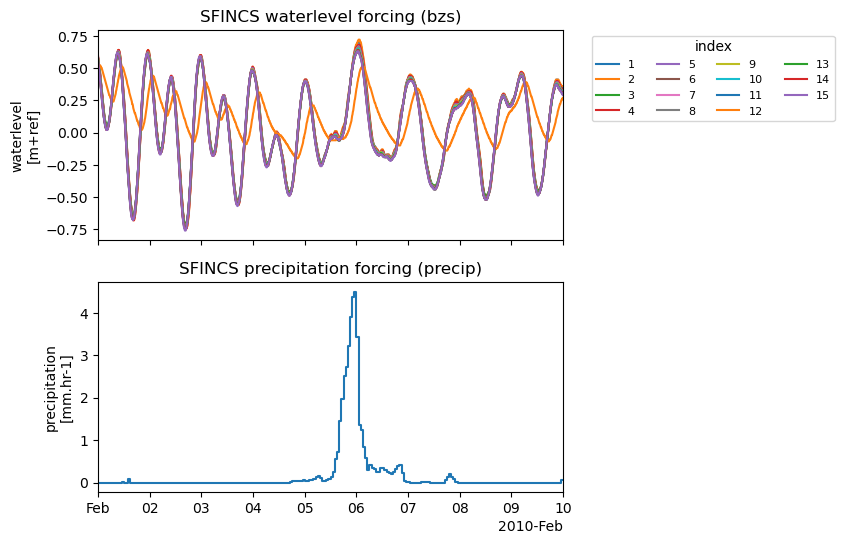

Tip
For an interactive online version click here:

Working with forcing conditions#
[1]:
from hydromt.log import setuplog
from hydromt_sfincs import SfincsModel
[2]:
# Initialize SfincsModel with the artifact data catalog which contains data for North Italy
sf = SfincsModel(
data_libs=["artifact_data"],
root="tmp_example",
mode="w+",
logger=setuplog("", log_level=20),
)
2024-04-10 15:51:07,228 - root - log - INFO - HydroMT version: 0.9.4
2024-04-10 15:51:07,262 - root - data_catalog - INFO - Reading data catalog archive artifact_data v0.0.8
2024-04-10 15:51:07,262 - root - data_catalog - INFO - Parsing data catalog from /home/runner/.hydromt_data/artifact_data/v0.0.8/data_catalog.yml
2024-04-10 15:51:07,307 - root - model_api - INFO - Initializing sfincs model from hydromt_sfincs (v1.0.4.dev0).
[3]:
sf.setup_grid(
x0=268650,
y0=5018550,
dx=150.0,
dy=150.0,
nmax=272,
mmax=425,
rotation=0,
epsg=32633,
)
[4]:
sf.setup_config(
tref="20100201 000000",
tstart="20100201 000000",
tstop="20100210 000000",
)
[5]:
# 2d precip
sf.setup_precip_forcing_from_grid(
precip="era5_hourly",
aggregate=True,
)
sf.write_forcing()
2024-04-10 15:51:07,334 - root - rasterdataset - INFO - Reading era5_hourly netcdf data from /home/runner/.hydromt_data/artifact_data/v0.0.8/era5_hourly.nc
2024-04-10 15:51:07,536 - root - sfincs - INFO - Write forcing files
[6]:
# 1d uniform precip
sf.setup_precip_forcing_from_grid(
precip="era5_hourly",
aggregate=True,
)
2024-04-10 15:51:07,545 - root - rasterdataset - INFO - Reading era5_hourly netcdf data from /home/runner/.hydromt_data/artifact_data/v0.0.8/era5_hourly.nc
2024-04-10 15:51:07,608 - root - model_api - WARNING - Replacing forcing: precip
[7]:
sf.forcing["precip"].to_pandas().to_csv("precip.csv")
sf.forcing.pop("precip", None) # reset
sf.setup_precip_forcing(
timeseries="precip.csv",
)
sf.plot_forcing()
2024-04-10 15:51:07,614 - root - dataframe - INFO - Reading csv data from precip.csv
[7]:
(<Figure size 600x300 with 1 Axes>,
[<Axes: title={'center': 'SFINCS precipitation forcing (precip)'}, ylabel='precipitation\n[mm.hr-1]'>])

[8]:
from hydromt_sfincs import utils
df = utils.read_timeseries("sfincs_compound//sfincs.bzs", tref=sf.config["tref"])
gdf = utils.read_xy("sfincs_compound//sfincs.bnd", crs=sf.crs)
sf.forcing.pop("bzs", None) # reset
sf.forcing.pop("precip", None) # reset
# add timeseries and locations
sf.setup_waterlevel_forcing(
timeseries=df,
locations=gdf,
merge=True,
)
sf.plot_forcing()
[8]:
(<Figure size 600x300 with 1 Axes>,
[<Axes: title={'center': 'SFINCS waterlevel forcing (bzs)'}, ylabel='waterlevel\n[m+ref]'>])

[9]:
# merge (overwrite) existing timeseries with different time resoltiuon
# and add offset
sf.setup_waterlevel_forcing(
timeseries=df.iloc[::5, [0]],
locations=gdf.iloc[[0]],
offset="dtu10mdt",
merge=True,
)
sf.plot_forcing()
2024-04-10 15:51:08,252 - root - rasterdataset - INFO - Reading dtu10mdt raster data from /home/runner/.hydromt_data/artifact_data/v0.0.8/dtu10mdt.tif
2024-04-10 15:51:08,291 - root - model_api - WARNING - Replacing forcing: bzs
[9]:
(<Figure size 600x300 with 1 Axes>,
[<Axes: title={'center': 'SFINCS waterlevel forcing (bzs)'}, ylabel='waterlevel\n[m+ref]'>])

[10]:
# update timeseries from csv
df.to_csv("waterlevel.csv")
sf.setup_waterlevel_forcing(
timeseries="waterlevel.csv",
merge=True,
)
sf.plot_forcing()
2024-04-10 15:51:08,466 - root - dataframe - INFO - Reading csv data from waterlevel.csv
2024-04-10 15:51:08,486 - root - model_api - WARNING - Replacing forcing: bzs
[10]:
(<Figure size 600x300 with 1 Axes>,
[<Axes: title={'center': 'SFINCS waterlevel forcing (bzs)'}, ylabel='waterlevel\n[m+ref]'>])
[11]:
# overwrite forcing from geodataset (netcdf file)
sf.setup_waterlevel_forcing(
geodataset="gtsmv3_eu_era5",
offset="dtu10mdt",
merge=False,
)
sf.plot_forcing()
2024-04-10 15:51:08,656 - hydromt.data_adapter.geodataset - geodataset - INFO - Reading gtsmv3_eu_era5 netcdf data from /home/runner/.hydromt_data/artifact_data/v0.0.8/gtsmv3_eu_era5.nc
2024-04-10 15:51:08,781 - root - rasterdataset - INFO - Reading dtu10mdt raster data from /home/runner/.hydromt_data/artifact_data/v0.0.8/dtu10mdt.tif
2024-04-10 15:51:08,809 - root - model_api - WARNING - Replacing forcing: bzs
[11]:
(<Figure size 600x300 with 1 Axes>,
[<Axes: title={'center': 'SFINCS waterlevel forcing (bzs)'}, ylabel='waterlevel\n[m+ref]'>])

[12]:
sf.write_forcing()
sf.write_config()
2024-04-10 15:51:09,097 - root - sfincs - INFO - Write forcing files
2024-04-10 15:51:09,113 - root - sfincs - INFO - Write vector file(s) for forcing.bzs to 'gis' subfolder
[13]:
# note that index number cannot be saved in ascii timeseries format
# and are stored as attributes of the geojson file
sf1 = SfincsModel(sf.root, mode="r") # read mode
sf1.read_forcing()
sf1.plot_forcing()
2024-04-10 15:51:09,155 - hydromt_sfincs.sfincs - model_api - INFO - Initializing sfincs model from hydromt_sfincs (v1.0.4.dev0).
2024-04-10 15:51:09,170 - hydromt_sfincs.sfincs - sfincs - WARNING - Index in bndfile does not match /home/runner/work/hydromt_sfincs/hydromt_sfincs/docs/_examples/tmp_example/gis/bnd.geojson
2024-04-10 15:51:09,182 - hydromt_sfincs.sfincs - sfincs - WARNING - Index in bndfile does not match /home/runner/work/hydromt_sfincs/hydromt_sfincs/docs/_examples/tmp_example/gis/bnd.geojson
[13]:
(<Figure size 600x600 with 2 Axes>,
array([<Axes: title={'center': 'SFINCS waterlevel forcing (bzs)'}, ylabel='waterlevel\n[m+ref]'>,
<Axes: title={'center': 'SFINCS precipitation forcing (precip)'}, ylabel='precipitation\n[mm.hr-1]'>],
dtype=object))
